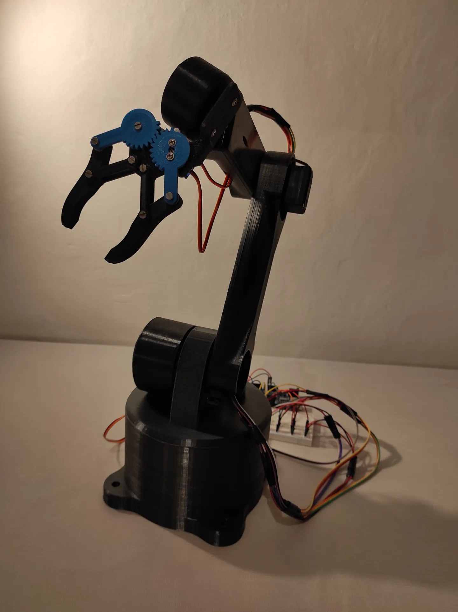

06 / Personal project · 2021
Robot arm
manipulator.
A custom robotic arm designed and developed as a complete hardware-software system. The project covered the mechanical concept, control application and communication between the controller and the robot.

Software for the hardware
The arm is driven by a Robot_arm class that keeps track of servo positions, limits and movement speed. Commands arrive from a Bluetooth controller and can move joints, return to a default position or play back saved positions.
My contributions
- Robot design and prototyping.
- Control application.
- Servo control system.
- Bluetooth communication.
- Hardware-software integration.